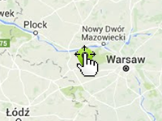

Example of how to drag the markers by long press. It is convenient for mobile devices.
Usage instructions:
Add this script to map GameObject.
Long press on the marker to drag it.
Add this script to map GameObject.
Long press on the marker to drag it.
DragMarkerByLongPressExample.cs
/* INFINITY CODE 2013-2016 */
/* http://www.infinity-code.com */
using UnityEngine;
namespace InfinityCode.OnlineMapsExamples
{
[AddComponentMenu("Infinity Code/Online Maps/Examples (API Usage)/DragMarkerByLongPressExample")]
public class DragMarkerByLongPressExample : MonoBehaviour
{
private void Start()
{
// Create a new marker.
OnlineMapsMarker marker = OnlineMaps.instance.AddMarker(OnlineMaps.instance.position, "My Marker");
// Subscribe to OnLongPress event.
marker.OnLongPress += OnMarkerLongPress;
}
private void OnMarkerLongPress(OnlineMapsMarkerBase marker)
{
// Starts moving the marker.
OnlineMapsControlBase.instance.dragMarker = marker;
OnlineMapsControlBase.instance.isMapDrag = false;
}
}
}